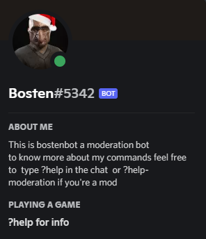

By Bostengard
| Feature | Description | Usage |
|---|---|---|
| Help commands | ||
| Help | This command gives the user a full view of all the bot modules, and they're personalized help command | ?help |
| User help | This command gives the user a full view of all the bot commands that doesn't require any permission | ?help-user |
| Moderation help | This command gives the user a full view of all the moderation commands, this commands need permission that change for every command | ?help-moderation |
| Math Help | This command gives the user all some possibilities of the math command | ?help-math |
| Music Help | This command gives the user a view of all the music commands | ?help-music |
| Settings Help | This command gives the user a way to personalize the bot behaviour in the server, permissions required | ?help-settings |
| User Commands | ||
| About Me | This command gives the user an embed full of info of themselves | ?aboutme |
| Server Leaderboard | This command Shows an embed with the 3 members that has send more messages in the server, and your number of messages | ?leaderboard |
| Server info | This command Shows an embed with Info about the server | ?serverinfo |
| Role Info | This command Shows an embed with about the role mentioned (with ID) | ?roleinfo < id > |
| Math | This command can resolve your operations with an extensive range (sin,cos to matrix,atan2) | ?math < operation > |
| This command gets reddit posts of a certain subreddit or a random one from 20 ish meme subreddits(personally chosen) | ?reddit < subeddit / random> | |
| Music | This command lets you play youtube music in your vc, you can add songs to a queue, skip the current song or end the queue | ?music < play / skip / stop > < link > |
| Random | Tells you a random number between 0 and a number of your choice | ?random < max number > |
| Moderation Commands | ||
| Delete | Deletes a custom amount of messages (max 99) | ?delete < amount > |
| Spam | Spam a custom amount of messages (max 50) (it's very slow) | ?spam < amount > |
| Warn | Warns a member | ?warn < mention > < reason > |
| Kick | Kicks a user | ?kick < mention > < reason > |
| Mute | Mutes a member (require a role named "muted") | ?mute < mention/ID > < Amounf of Time > < reason > |
| Unmute | Unmutes a member (require a role named "muted") | ?unmute < mention/ID > |
| Ban | Bans a member | ?Ban < mention > |
| Unban | Unbans a member | ?Ban < mention(ID) > < reason > |
| Slowmode | Changes the slowmode of a channel | ?slowmode < amount > < channel > |
| Cases | Shows the cases for a user | ?cases < ID/mention > |
| Reset cases | Resets the cases for a user | ?resetcases < mention > |
| Reset Leaderboard | Resets the server leaderboard | ?resetleaderboard |
| Music Commands | ||
| Play Music | Plays a youtube or spotify song | ?music play < link > |
| Playlist Music | Plays a youtube or spotify playlist | ?music playlist < link > |
| Skip Music | Skips to the next song in the queue if there are no songs leaves | ?music skip |
| Stop Music | Stops playing music and leaves tha channel | ?music stop |
| Loop Music | Loops the current song | ?music loop |
| Queue Loop Music | Loops the current queue | ?music queueloop |
| Remove Loop Music | Remove the loopo | ?music removeloop |
| Now Playing | Shows info of the current song | ?music nowplaying |
| Shuffle | Shuffles the queue | ?music shuffle |
| Settings Commands | ||
| Logs | To enable logs create a channel named "logs" to disable them, delete that channel | none |
| Music | Enable or disable music in the server | ?settings MusicBool < 1(active)/0(inactive) > |
| Math | Enable or disable Math in the server | ?settings MathBool < 1(active)/0(inactive) > |
| Enable or disable reddit in the server | ?settings RedditBool < 1(active)/0(inactive) > | |
| Levels | Enable or disable the level system in the server | ?settings LevelsBool < 1(active)/0(inactive) > |
| View settings | Look at your current settings | ?view-settings |
| Useful Info | ||
| all the settings tweaks take one message to make effect. | ||
| the level system does't impact leaderboard. the level system is programmed to be 1 levels every 1k messages to make the leveling more consistent |
||